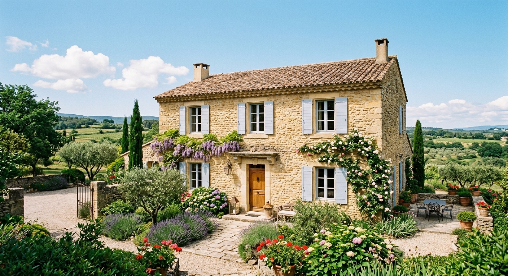
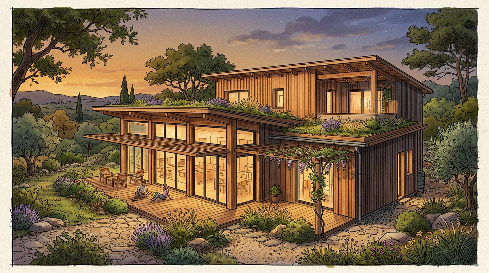

H4 — Créer des visuels attractifs
Cette quatrième séance est consacrée à l'ingénierie de prompt visuel, au benchmark des générateurs d'images et à l'intégration pratique dans vos workflows de création.
Objectifs de la séance
- Maîtriser la grille des 5 éléments : rédiger un prompt d'image précis, contrôlé et reproductible.
- Comparer l'impact des prompts et des générateurs : observer la différence entre un prompt simpliste et un prompt structuré sur DALL-E 3 et Adobe Firefly.
- Évaluer les générateurs majeurs : adapter le choix de l'outil (Firefly, Gemini/Imagen, DALL-E 3, Canva) selon l'enjeu juridique et créatif.
- Préparer l'Exercice 2 de la certification : concevoir le prompt visuel complet pour illustrer un article de blog ou une campagne.
1. La grille des 5 éléments d'un prompt visuel
Sans consignes précises, une IA générative d'images livre des résultats aléatoires. Pour garder le contrôle, chaque prompt doit comporter ces 5 piliers :
| Élément | Rôle | Exemples de mots-clés |
|---|---|---|
| 1. Sujet principal | Ce qui doit être représenté (objet, scène, personnage). | "Une librairie indépendante chaleureuse au centre-ville..." |
| 2. Style artistique | L'esthétique générale de l'image. | Photo réaliste, aquarelle, vectoriel, flat design, 3D render, pop art... |
| 3. Ambiance & Lumière | L'atmosphère et la qualité de l'éclairage. | Lumineux, heure dorée (golden hour), néon cyberpunk, cozy, matinal... |
| 4. Palette de couleurs | Les 3 à 4 teintes dominantes. | Teintes pastel, bleu nuit et argent, tons terreux et bois, néon fluo... |
| 5. Composition & Format | Le cadrage, l'angle de vue et le ratio d'aspect. | Format 16:9, vue en contre-plongée, plan large, règle des tiers... |
Exemple de prompt visuel structuré
« Une librairie indépendante chaleureuse avec des étagères en bois remplies de livres. Style illustration vectorielle moderne. Ambiance cozy et baignée par la lumière douce d'un après-midi d'automne. Palette de couleurs : orange cuivré, vert forêt et bois chaud. Format horizontal 16:9, vue d'ensemble centrée. »
🖼️ Comparateur visuel interactif : Prompt Naïf vs Prompt Structuré
Expérimentez ci-dessous la différence concrète entre un prompt générique et un prompt professionnel structuré selon les 5 éléments, comparés sur DALL-E 3 et Gemini :
Rendu basique, éléments parasites non demandés.

Maison générique, absence de style ou de direction d'art.
Respect strict des matériaux, du cadrage et de l'ambiance lumineuse.

Rendu architectural précis, respect parfait du style et de la palette.
🎮 Exercice interactif : Trouvez l'élément manquant !
🔍 Entraînement : Chaque prompt ci-dessous a oublié l'un des 5 éléments indispensables. Identifiez le manque :
Panorama des générateurs d'images
| Outil | Points forts | Point faible | Cas d'usage idéal |
|---|---|---|---|
| Adobe Firefly | Respect strict des droits d'auteur, intégration Photoshop | Nécessite des crédits Adobe | Projets d'entreprise & usage commercial garanti |
| Google Gemini (Imagen) | Gratuit, très rapide, comprend le langage naturel | Moins de réglages avancés | Maquettes & itérations rapides |
| DALL-E 3 (ChatGPT) | Excellent respect des consignes textuelles | Crédits limités en version gratuite | Visuels complexes intégrant du texte |
| Canva Magic Media | Directement intégré à vos designs Canva | Définition parfois limitée | Bannières réseaux sociaux & présentations |
Intégration pratique : Canva Magic Media
L'extension Magic Media dans Canva permet de générer des visuels sans quitter l'interface de création :
- Dans votre document Canva, ouvrez le panneau latéral gauche Applis.
- Sélectionnez Magic Media (ou Studio Magique).
- Saisissez votre prompt structuré (Sujet + Style + Ambiance + Couleurs + Format).
- Choisissez le style de rendu proposé (ex : Vectoriel, Photo, Neon) et générez 4 propositions.
Focus Certification : L'Exercice 2 (Volet Visuel)
Dans l'épreuve de certification, vous devrez associer à votre article de blog le prompt visuel complet destiné à l'illustrer.
Exemple attendu pour l'épreuve
Sujet d'article : « Les coups de cœur littéraires de l'automne dans notre librairie. »
Prompt d'illustration associé :
« Une pile de livres de poche anciens posée sur une table en bois clair, à côté d'une tasse de thé fumante. Style photographie professionnelle avec faible profondeur de champ (flou d'arrière-plan). Ambiance chaleureuse, cocooning et automnale. Couleurs : marron chaud, beige, orange brûlé et touches de vert olive. Format horizontal 16:9, lumière naturelle venant de la droite. »
Bilan de la séance H4
- Rigueur : Appliquer systématiquement la grille des 5 éléments dans tout prompt visuel.
- Stratégie : Sélectionner le bon outil selon l'enjeu juridique ou d'intégration.
- Livrable : Être capable de fournir un prompt d'image prêt à l'emploi pour une campagne éditoriale.